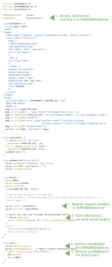
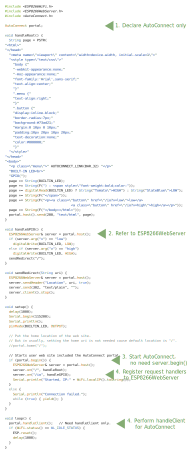
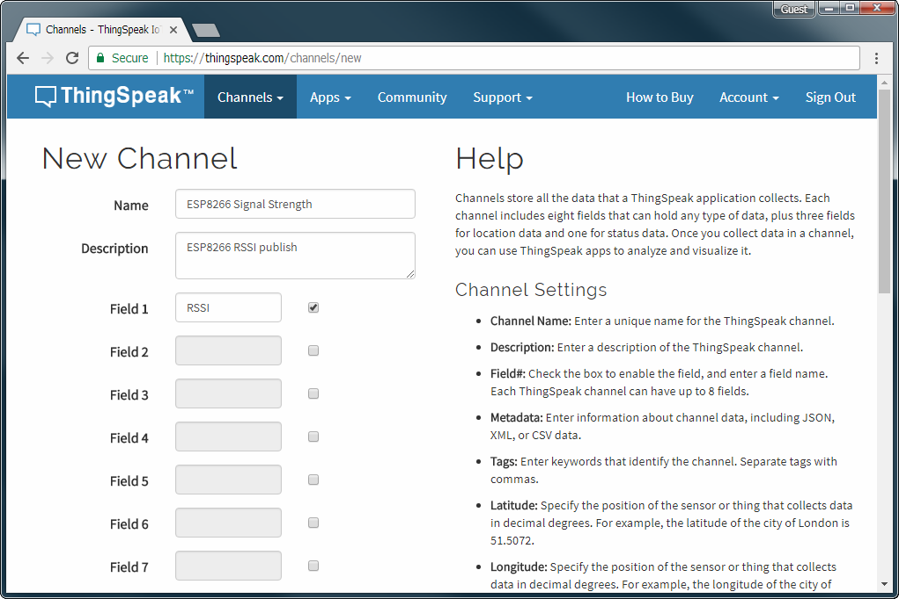
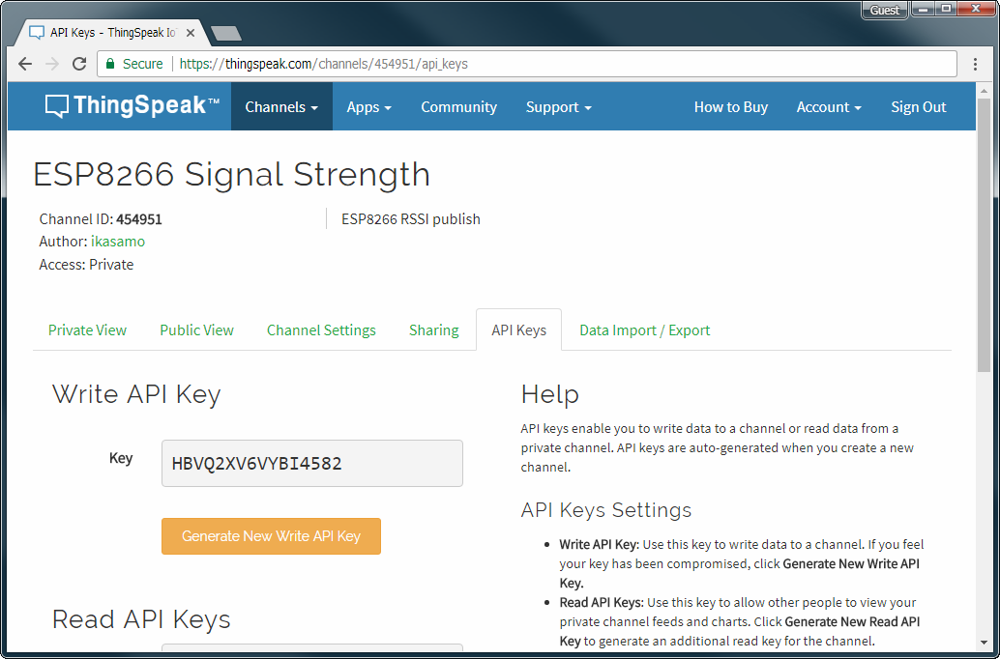
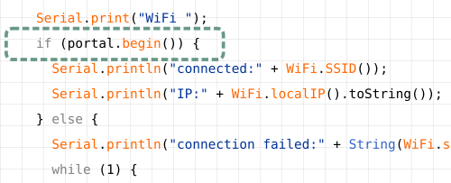

How to embed
Embed the AutoConnect to the Sketch¶
Here hold two case examples. Both examples perform the same function. Only how to incorporate the AutoConnect into the Sketch differs. Also included in the sample folder, HandlePortal.ino also shows how to use the PageBuilder library for HTML assemblies.
What does this example do?¶
Uses the web interface to light the LED connected to the D0 (sometimes called BUILTIN_LED) port of the NodeMCU module like the following animation.
Access to the ESP8266 module connected WiFi from the browser then the page contains the current value of the D0 port would be displayed. The page has the buttons to switch the port value. The LED will blink according to the value with clicked by the button. This example is a typical sketch of manipulating ESP8266's GPIO via WLAN.
Embed AutoConnect library into this sketch. There are few places to be changed. And you can use AutoConnect's captive portal function to establish a connection freely to other WiFi spots.
Embed AutoConnect¶
Pattern A.¶
Bind to ESP8266WebServer, performs handleClient with handleRequest.

In what situations should the handleRequest be used.
It is something needs to be done immediately after the handle client. It is better to call only AutoConnect::handleClient whenever possible.
Pattern B.¶
Declare only AutoConnect, performs handleClient.

Used with MQTT as a client application¶
The effect of AutoConnect is not only for ESP8266/ESP32 as the web server. It has advantages for something WiFi client as well. For example, AutoConnect is also convenient for publishing MQTT messages from various measurement points. Even if the SSID is different for each measurement point, it is not necessary to modify the Sketch.
This example tries to publish the WiFi signal strength of ESP8266 with MQTT. It uses the ThingSpeak for MQTT broker. ESP8266 publishes the RSSI value to the channel created on ThingSpeak as MQTT client. This example is well suited to demonstrate the usefulness of AutoConnect, as RSSI values are measured at each access point usually. Just adding a few lines of code makes it unnecessary to upload sketches with the different SSIDs rewrite for each access point.

Advance procedures¶
- Arduino Client for MQTT - It's the PubSubClient, install it to Arduino IDE. If you have the latest version already, this step does not need.
- Create a channel on ThingSpeak.
- Get the Channel API Keys from ThingSpeak, put its keys to the Sketch.
The ThingSpeak is the open IoT platform. It is capable of sending data privately to the cloud and analyzing, visualizing its data. If you do not have an account of ThingSpeak, you need that account to proceed further. ThingSpeak has the free plan for the account which uses within the scope of this example.1 You can sign up with the ThingSpeak sign-up page.
Whether you should do sign-up or not.
You are entrusted with the final judgment of account creation for ThingSpeak. Create an account at your own risk.
Create a channel on ThingSpeak¶
Sign in ThingSpeak. Select Channels to show the My Channels, then click New Channel.
At the New Channel screen, enter each field as a below. And click Save Channel at the bottom of the screen to save.
- Name:
ESP8266 Signal Strength - Description:
ESP8266 RSSI publish - Field1:
RSSI

Get Channel ID and API Keys¶
The channel successfully created, you can see the channel status screen as a below. Channel ID is displayed there.2

Here, switch the channel status tab to API Keys. The API key required to publish the message is the Write API Key.

The last key you need is the User API Key and can be confirmed it in the user profile. Pull down Account from the top menu, select My profile. Then you can see the ThingSpeak settings and the User API Key is displayed middle of this screen.

the Sketch, Publishes messages¶
The complete code of the Sketch is mqttRSSI.ino in the AutoConnect repository. Replace the following #define in a sketch with User API Key, Write API Key and Channel ID. After Keys updated, compile the Sketch and upload it.
#define MQTT_USER_KEY "****************" // Replace to User API Key.
#define CHANNEL_ID "******" // Replace to Channel ID.
#define CHANNEL_API_KEY_WR "****************" // Replace to the write API Key.
Publish messages¶
After upload and reboot complete, the message publishing will start via the access point now set. The message carries RSSI as the current WiFi signal strength. The signal strength variations in RSSI are displayed on ThingSpeak's Channel status screen.
How embed to your sketches¶
For the client sketches, the code required to connect to WiFi is the following four parts only.
-
#include directive3
Include
AutoConnect.hheader file behind the include ofESP8266WiFi.h.
-
Declare AutoConnect
The declaration of the AutoConnect variable is not accompanied by ESP8266WebServer.

-
Invokes "begin()"
Call AutoConnect::begin. If you need to assign a static IP address, executes AutoConnectConfig before that.

-
Performs "handleClent()" in "loop()"
Invokes AutoConnect::handleClient() at inside
loop()to enable the AutoConnect menu.